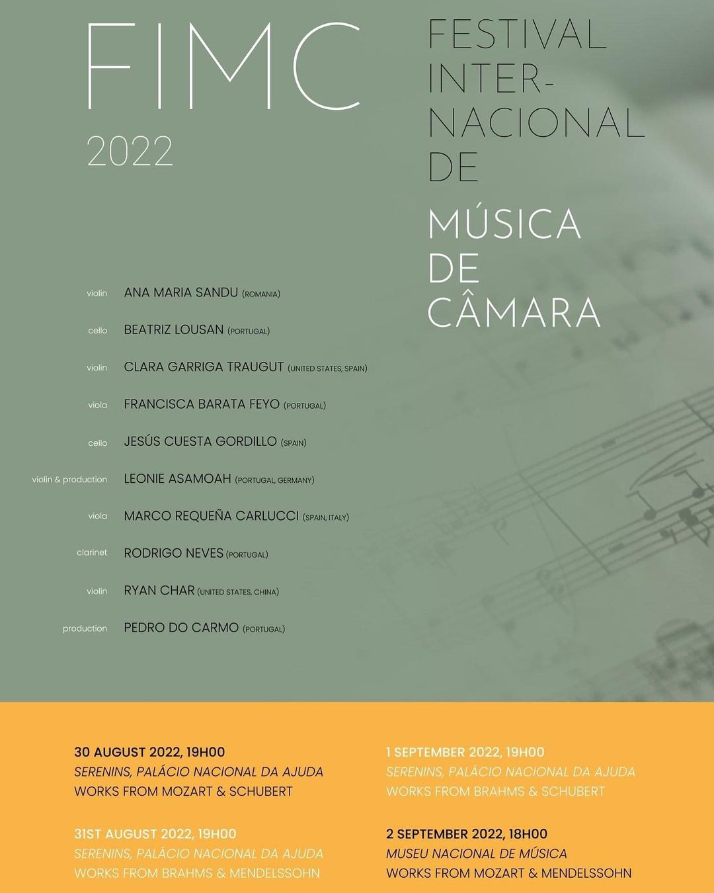

Program
Last years program
This years program will be made available shortly before the festival!
- Sala dos Serenins, Palacio Nacional da Ajuda
- Calçada do Mirante a Ajuda 10A, Lisboa
- National Music Museum
- R. Joao de Freitas Branco 12, 1500-359 Lisboa
- More to be announced Soon!
Location
A last year's festival preview
in Sala dos Serenins, Palacio Nacional da Ajuda